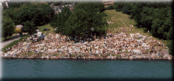

|
Owen Park is a general admission area. Picnic/BBQ areas are available on a first-come basis. You may bring in a 14" beverage cooler (no glass).
 (Photo copyright Joe Pfeiffer) Parking for this area is on-site, with a nominal parking fee. This park is located at about 8431 Jefferson; 3/4 of a mile East of the Belle Isle (MacArthur) Bridge at Grand Boulevard, and about 2 miles West of Conner. There are no permanent park signs here, but race signs will be posted a few weeks before the event.
All contents Copyright © 1997 Spirit of Detroit THUNDERFEST, except where noted.
Web page created by Brian Reed.
|